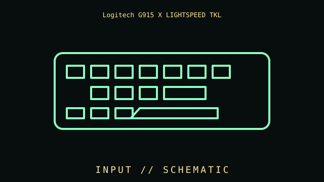

[ INDIVIDUAL COMPONENT // INPUT DEVICES ]
Logitech G915 X LIGHTSPEED TKL
Compact low-profile gaming keyboard with LIGHTSPEED, Bluetooth, USB-C, per-key lighting, and GL switch options. This entry identifies this product generation and distinguishes important interface and revision differences.

MODEL IDENTIFICATION: Check the label for the complete model, revision, regional SKU, accessories, and current manufacturer documentation before installation.
Specifications
| Catalog subcategory | Keyboards and integrated pointing devices |
|---|---|
| Catalog identity | Logitech G915 X LIGHTSPEED TKL |
| Era / family | Low-profile tenkeyless gaming keyboard, G915 X generation |
| Product-specific features | 87-key-class US TKL layout; low-profile GL mechanical switch options; per-key LIGHTSYNC RGB, media controls, and volume roller. |
| Interface | LIGHTSPEED 2.4 GHz USB receiver, Bluetooth, and USB-C wired connection/charging. |
| Compatibility guidance | Basic USB HID typing works without G HUB; macros, profiles, lighting, and firmware use Logitech G software on supported OS. Confirm regional layout and Clicky/Tactile/Linear switch label. |
| Variants and service note | This is the TKL wireless model, not full-size G915 X or original G915 TKL. Preserve its LIGHTSPEED receiver; Bolt/Unifying receivers are not substitutes. |
Installation & compatibility checks
- Record the exact model/revision, interface mode, receiver or cable identity, firmware, driver version, and supported host before testing.
- Check connector, power, protocol, OS/driver, and application support separately; physical connector fit alone does not establish feature compatibility.
- For wireless models, preserve original receivers and pairing data. Test wired and radio modes independently where both are provided.
- Do not infer performance from manufacturer maximums alone; note settings, application, host, and measurement method for measured results.
Model notes
This is the TKL wireless model, not full-size G915 X or original G915 TKL. Preserve its LIGHTSPEED receiver; Bolt/Unifying receivers are not substitutes.
Basic USB HID typing works without G HUB; macros, profiles, lighting, and firmware use Logitech G software on supported OS. Confirm regional layout and Clicky/Tactile/Linear switch label.
Sources & further reading
- Manufacturer — Logitech G915 X LIGHTSPEED TKL product specificationsProduct reference; confirm exact variant and regional SKU.
- Manufacturer — Logitech G915 X LIGHTSPEED TKL support and manualsSupport reference for drivers, manuals, and revision-specific guidance.
Manufacturer model references are authoritative for exact revisions and regional variants. Specifications can differ by package, firmware, region, and driver generation.